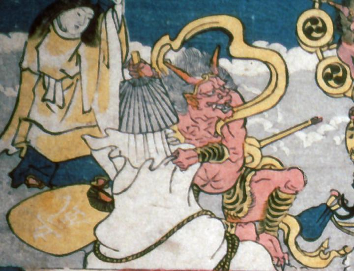

座り込み、うちわで袋に風を送る風神。黄金の羽衣と、頭に金輪、虎柄の腰巻を身につけている。風神の肌は赤く2本の角が生えている。
著作者：歌川貞重／出典：親書誌：A5_pushkin_0033：教訓三界図会；キョウクンサンガイズエ／日付：2011／資源識別子：A5_pushkin_0033_0006_0000
Copyright (c)2010- International Research Center for Japanese Studies, Kyoto, Japan. All rights reserved.